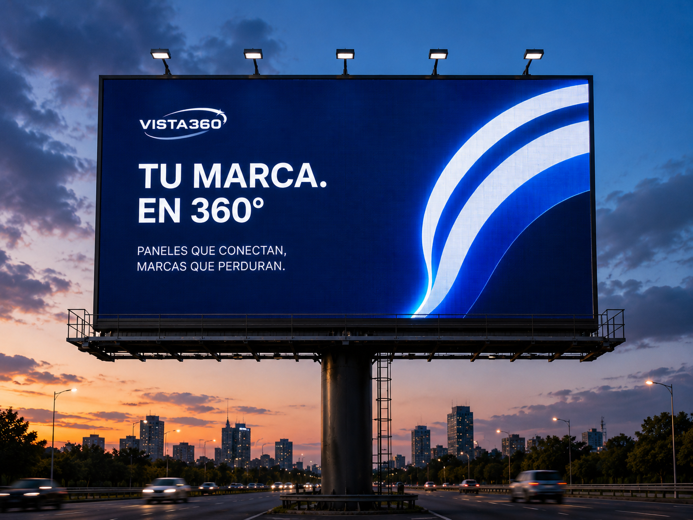

Nuestros productos
Dos formas de hacer que tu marca sea imposible de ignorar.
Elige el formato que mejor se adapta a tu objetivo y entra para conocer todos los detalles.

Publicidad exterior estática
VISTA360 Classic
Murales, unipolares y tótems. Soportes físicos que dominan la calle y se ven sin necesidad de una pantalla, encendidos día y noche.
Clic para entrar a VISTA360 Classic →
Pantallas LED · próximamente
VISTA360 Digital
Pantallas LED con contenido en movimiento, programable y medible. Tecnología dinámica que invita a la audiencia a interactuar con tu marca.
Clic para entrar a VISTA360 Digital →